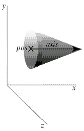

| Visual Reference |
 The cone object has a circular cross section and tapers to a point. The following statement will display a cone with the center of its circular base at (5,2,0), pointing parallel to the x axis with length 12; the wide end of the cone has radius 1:
The cone object has the following attributes and default values, like those for cylinders: pos (0,0,0), x (0), y(0), z(0), axis (1,0,0), length (1), color (1,1,1) which is color.white, red (1), green (1), blue (1), and up (0,1,0). As with cylinders, up has a subtle effect on the 3D appearance of a cone. Additional cone attribute:
radius Radius of the wide end of the cone, default = 1
Note that the pos attribute for cylinder, arrow, cone, and pyramid corresponds to one end of the object, whereas for a box, sphere, or ring it corresponds to the center of the object.